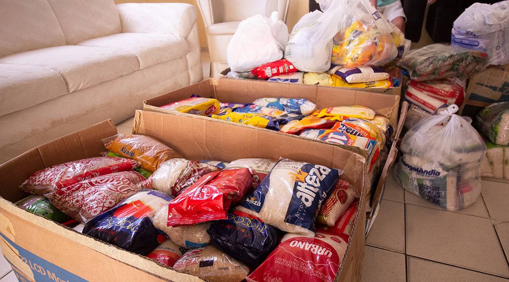
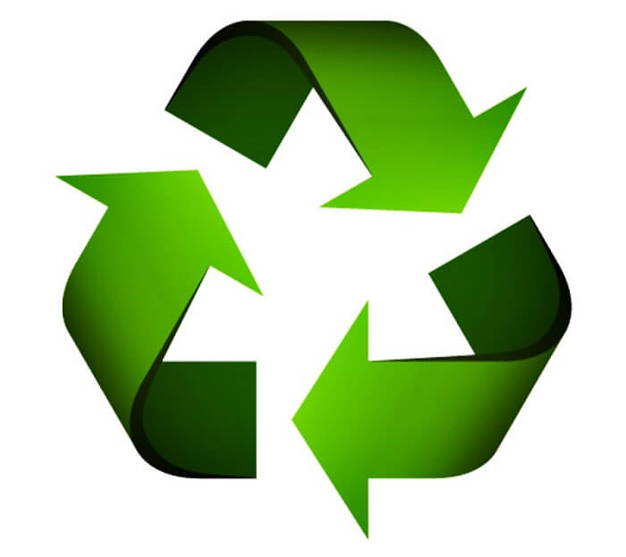
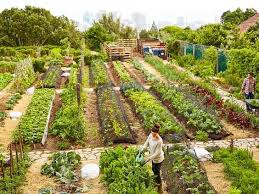

QUEM SOMOS
Somos uma organização dedicada a cumprir a ODS 2 da ONU através da arrecadação de doações para a compra de cestas básicas e alimentos para famílias em situação de vulnerabilidade.
Nosso trabalho é feito por voluntários e colaboradores que se preocupam com o bem-estar social e a segurança alimentar das comunidades brasileiras.

AGRICULTURA SUSTENTÁVEL
Também promovemos práticas de agricultura sustentável para garantir alimentos saudáveis, preservar o meio ambiente e promover o desenvolvimento sustentável das comunidades.

Reciclagem
Promovemos a reciclagem de embalagens e materiais descartáveis.

Horta Comunitária
Estimulamos a criação de hortas comunitárias para cultivo de alimentos orgânicos.

Educação Ambiental
Realizamos projetos de educação ambiental para conscientização da comunidade.